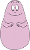
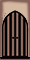
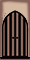
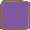
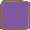
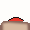
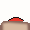

Für mich war es sehr wichtig, während der Arbeit an meinem Projekt immer ein klares Ziel vor Augen zu haben: Ich wollte wissen, wie die endgültige Version aussehen sollte, und zu jedem Zeitpunkt wissen, was mein nächster Schritt sein würde. Deshalb habe ich mich dazu entschlossen, ein Spiel zu programmieren – auch, weil ich TKinter nicht allzu sehr mochte und stattdessen lieber mit pygame arbeiten wollte... Meine ursprüngliche Idee war es, ein ähnliches Spiel wie Feuer und Wasser (ein bekanntes Jump and Run-Spiel der deutschen Spieleplattform spieleaffe.de) zu entwickeln. Ein Vorteil davon war, dass ich einerseits alles recht simpel und einfach halten konnte und andererseits immer noch etwas hinzufügen konnte. Das Spiel kann allein oder zu zweit gespielt werden, da es zwei Spieler gibt, die sich gegenseitig helfen müssen, um zu gewinnen. Ich fing an, ein anderes Thema als Feuer und Wasser für das Spiel zu finden, und beschloss, die Figuren aus Barbapapa zu verwenden - eine französische Serie, die ich als Kind geliebt habe. Deshalb ist das Spiel für Kinder zwischen etwa 6 und 12 Jahren konzipiert.
Um Barbapapa zu bewegen, benutze die Pfeiltasten:
 
Um Barbamama zu bewegen, benutze die WAD-Tasten:

 



 



 
